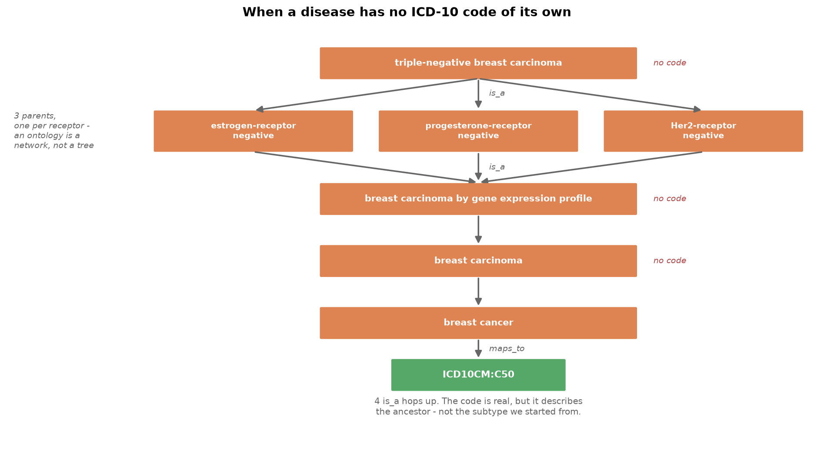

Part 3 — Practical: Querying the Knowledge Graph#
Practical Session 1 — 35 minutes
This is the hands-on part. We start from ICD-10 codes, the vocabulary a hospital actually uses, and try to get from there to genes. It does not work straightforwardly, and the ways it fails are the point.
Then we ask the question the graph is really good at — which diseases resemble each other? — connect the graph to the Session 2 omics data, and finish by putting the curated graph back alongside the inferred co-expression network from Part 1, which is where gene–disease discovery actually happens.
Learning objectives#
By the end of this notebook we will be able to:
Explain what ICD-10 is, what it codes for, and what it does not code for.
Measure the coverage of a mapping and diagnose why it is incomplete.
Traverse an ontology to recover a mapping that is missing on a specific term.
Project a bipartite graph onto one of its node types.
Interpret a shared-gene result critically — including spotting a spurious one.
Join a knowledge graph to an omics matrix, and avoid the identifier trap.
Combine the curated and inferred networks to separate corroboration from candidates — and recognise when the combination has re-imported a confound.
# ── Imports ──────────────────────────────────────────────────────────────────
import pandas as pd
import networkx as nx
import matplotlib.pyplot as plt
# ── Custom Imports ───────────────────────────────────────────────────────────
import s1_helpers as h
G = h.load_kg()
h.print_graph_info(G)
Number of nodes: 881
Number of edges: 1768
Graph type: undirected
Nodes by type:
760 gene
90 disease
31 icd10
Edges by type:
1,656 associated_with
81 is_a
31 maps_to
Self-loops: 0
Graph density: 0.004561
Connected components: 1
Largest component: 881 nodes (100.0% of the graph)
Average clustering coefficient: 0.0137
Section A — Starting from ICD-10#
≈12 minutes
A1. What is ICD-10?#
The International Classification of Diseases, 10th revision is the WHO’s clinical coding system. It is the vocabulary in which hospital records, death certificates and insurance claims are written. If we ever get real clinical data, this — or its successor ICD-11 — is what the diagnoses will look like.
Two variants appear in our data:
ICD10WHO — the WHO’s international version.
ICD10CM — the US “Clinical Modification”, which is more finely subdivided.
Codes are hierarchical strings: C50 is malignant neoplasm of breast, C50.2 is
a specific quadrant of it.
The first fifteen of them:
icd10_map = pd.read_csv("../../data/session-1-data/icd10_map.csv")
icd10_map["disease name"] = icd10_map["mondo_id"].map(
lambda i: G.nodes[i]["name"] if i in G else "?"
)
icd10_map[["mondo_id", "disease name", "icd10_code", "icd10_label"]].head(15)
| mondo_id | disease name | icd10_code | icd10_label | |
|---|---|---|---|---|
| 0 | MONDO_0004658 | breast carcinoma in situ | ICD10CM:D05 | Carcinoma in situ of breast |
| 1 | MONDO_0004975 | Alzheimer disease | ICD10CM:G30 | Alzheimer's disease |
| 2 | MONDO_0004975 | Alzheimer disease | ICD10WHO:G30 | Alzheimer disease |
| 3 | MONDO_0004979 | asthma | ICD10CM:J45 | Asthma |
| 4 | MONDO_0004979 | asthma | ICD10WHO:J45 | Asthma |
| 5 | MONDO_0005011 | Crohn disease | ICD10CM:K50 | Crohn's disease [regional enteritis] |
| 6 | MONDO_0005083 | psoriasis | ICD10CM:L40 | Psoriasis |
| 7 | MONDO_0005083 | psoriasis | ICD10WHO:L40 | Psoriasis |
| 8 | MONDO_0005090 | schizophrenia | ICD10CM:F20 | Schizophrenia |
| 9 | MONDO_0005090 | schizophrenia | ICD10WHO:F20 | Schizophrenia |
| 10 | MONDO_0005101 | ulcerative colitis | ICD10CM:K51 | Ulcerative colitis |
| 11 | MONDO_0005101 | ulcerative colitis | ICD10WHO:K51 | Ulcerative colitis |
| 12 | MONDO_0005147 | type 1 diabetes mellitus | ICD10CM:E10 | Type 1 diabetes mellitus |
| 13 | MONDO_0005147 | type 1 diabetes mellitus | ICD10WHO:E10 | Type 1 diabetes mellitus |
| 14 | MONDO_0005148 | type 2 diabetes mellitus | ICD10CM:E11 | Type 2 diabetes mellitus |
A2. Exercise: how good is the coverage?#
But how many of the graph’s 90 diseases can actually be reached from an ICD-10 code?
Count the diseases that have a maps_to edge, and express it as a fraction.
diseases = h.nodes_of_type(G, "disease")
# TODO: a disease is "covered" if it has at least one maps_to edge
### YOUR CODE HERE ###
print(f"diseases with a direct ICD-10 code: {len(covered)} / {len(diseases)}"
f" ({len(covered) / len(diseases):.0%})")
A3. Where does the gap fall?#
About one in five. Before assuming the data is broken, look at what is missing — and notice that the gap is not spread evenly.
# Split the diseases into the fine-grained breast subtypes and everything else.
# Matching on the name is crude - it misses breast terms that do not say so, such
# as "lobular neoplasia". Good enough for counting here, but the robust version
# would ask the ontology whether breast cancer is an ancestor.
def is_breast(disease_id):
name = G.nodes[disease_id]["name"].lower()
return "breast" in name or "mammary" in name
breast_terms = [d for d in diseases if is_breast(d)]
other_terms = [d for d in diseases if not is_breast(d)]
for label, group in [("breast subtypes", breast_terms), ("everything else", other_terms)]:
with_code = [d for d in group if d in covered]
print(f"{label:18s} {len(with_code):>3} of {len(group):>3} have an ICD-10 code "
f"({len(with_code) / len(group):.0%})")
breast subtypes 3 of 63 have an ICD-10 code (5%)
everything else 16 of 27 have an ICD-10 code (59%)
There it is. 3 of 63 breast subtypes have a code, against 16 of 27 other diseases. Asthma, multiple sclerosis, Parkinson disease and type 1 diabetes are all coded fine. The failure is specific to the fine-grained subtypes — histological (lobular, ductal, medullary, apocrine) and molecular (triple-negative, HER2 positive, luminal A/B).
Now here is the decisive fact. These are all the C50 codes that exist anywhere
in MONDO’s full mapping file, not just in our subset:
Code |
Label |
|---|---|
|
Malignant neoplasm of breast |
|
Malignant neoplasm of upper-inner quadrant of breast |
|
Malignant neoplasm of lower-inner quadrant of breast |
|
Malignant neoplasm of axillary tail of breast |
ICD-10 subdivides breast cancer anatomically — by which part of the breast the tumour is in. There is no ICD-10 code for “triple-negative”, or “luminal A”, or “ER positive”, and there cannot be one. Tumour morphology lives in a completely separate classification, ICD-O-3.
So this is not a coverage problem that a better data source would fix. It is a granularity mismatch: the clinical vocabulary and the molecular vocabulary describe the disease at different resolutions.
A4. Recovering the mapping by climbing the ontology#
The is_a edges give us a way out. If a subtype has no code of its own, its
parent might.

# Follow is_a edges upwards from triple-negative breast carcinoma. `with_depth`
# gives the number of hops, so we can tell "one level up" from "four levels up".
tnbc = "MONDO_0005494"
print(f"start: {G.nodes[tnbc]['name']}\n")
for ancestor, depth in h.ancestors_of(G, tnbc, with_depth=True):
codes = [n for n in G.neighbors(ancestor) if G.nodes[n]["type"] == "icd10"]
marker = f" <-- {codes}" if codes else ""
print(f" {depth} hop(s) up: {G.nodes[ancestor]['name']}{marker}")
start: triple-negative breast carcinoma
1 hop(s) up: progesterone-receptor negative breast cancer
1 hop(s) up: Her2-receptor negative breast cancer
1 hop(s) up: estrogen-receptor negative breast cancer
2 hop(s) up: breast carcinoma by gene expression profile
3 hop(s) up: breast carcinoma
4 hop(s) up: breast cancer <-- ['ICD10CM:C50']
Notice that three diseases sit one hop up: estrogen-receptor negative,
progesterone-receptor negative and Her2-receptor negative. That is not a quirk of
the data — it is the definition. “Triple-negative” means negative for all three
receptors, and the ontology records it as three separate is_a relationships.
So an ontology is a network, not a tree: a term can have several parents, and “climbing” means a breadth-first search rather than walking a single line. The helper sorts and searches by depth so the answer is the closest coded ancestor, and is identical every time we run it.
A5. Exercise: resolve every disease#
h.icd10_for_disease(G, disease_id) wraps that climb. It returns the code, the
node it was found on, and how many hops it took — the steps field, where 0
means the disease carries the code itself.
Apply it to all 90 diseases and count how many can now be resolved.
# TODO: resolve each disease and collect the results into a frame
### YOUR CODE HERE ###
n_resolved = resolved["icd10"].astype(bool).sum()
print(f"resolved: {n_resolved} / {len(diseases)}\n")
print(resolved["steps"].value_counts(dropna=False).sort_index().to_string())
From 19 to 82. Every breast cancer subtype now reaches C50, most of them 3–5 hops up.
But be careful what we claim. A code found 4 hops up is a real code, and it is what a hospital would have billed — but it describes the ancestor. Saying “triple-negative breast carcinoma maps to C50” is true; saying “C50 identifies triple-negative patients” is false. The mapping is many-to-one and it loses exactly the information a molecular study cares about.
# Which diseases still cannot be resolved?
resolved[~resolved["icd10"].astype(bool)]
| disease | icd10 | steps | |
|---|---|---|---|
| 30 | gastric carcinoma | NaN | |
| 38 | coronary artery disorder | NaN | |
| 43 | lung adenocarcinoma | NaN | |
| 48 | melanoma | NaN | |
| 52 | pancreatic ductal adenocarcinoma | NaN | |
| 57 | colorectal cancer | NaN | |
| 80 | rheumatoid arthritis | NaN | |
| 82 | glioblastoma | NaN |
These eight are genuine dead ends, and for a different reason from the subtypes.
Colorectal cancer, melanoma, glioblastoma, rheumatoid arthritis — every one of
these has a perfectly good ICD-10 code in the real world (C18, C43, C71,
M05). They are missing here because MONDO never curated the cross-reference, and
because these terms sit at the top of their own hierarchies so there is no ancestor
to inherit from either.
That is failure mode 2 from Part 2 — a plain curation gap, not a granularity mismatch. Two different causes, two different remedies, and the graph reports both as the same silence.
Section C — Connecting to the omics data#
Stretch section. If the room is short of time, stop here and come back to this afterwards — it needs the Session 2 omics pickle, and Section B is the part that carries the practical. Nothing later depends on finishing it live.
This graph is not a closed world. It is keyed to join onto the molecular data from Session 2.
C1. The identifier trap#
The TCGA transcriptomics matrix uses versioned Ensembl IDs — ENSG00000012048.23.
Open Targets uses unversioned ones — ENSG00000012048. The suffix is the
annotation release the gene model came from.
Join them naively and we match nothing at all. Not fewer things — nothing. And because an empty join is not an error, it looks like a real biological result.
# Set this to wherever the Session 2 omics pickle lives.
OMICS_PATH = "/home/bmai/Documents/eccb_omics/omics.pkl"
try:
layers, meta = h.load_omics(OMICS_PATH, layers=("transcriptomics",))
transcriptomics = layers["transcriptomics"]
OMICS_AVAILABLE = True
print(f"transcriptomics: {transcriptomics.shape[0]} patients "
f"x {transcriptomics.shape[1]:,} genes")
print(f"subtype labels: {meta.value_counts().to_dict()}")
except FileNotFoundError as exc:
OMICS_AVAILABLE = False
print(f"Skipping Section C - {exc}")
Skipping Section C - No omics file at /home/bmai/Documents/eccb_omics/omics.pkl. This section is optional - the rest of the notebook runs without it.
if OMICS_AVAILABLE:
kg_genes = set(h.nodes_of_type(G, "gene"))
omics_raw = set(transcriptomics.columns)
omics_stripped = set(h.strip_ensembl_version(transcriptomics.columns))
print(f"matched WITHOUT stripping the version: {len(kg_genes & omics_raw):>4}")
print(f"matched AFTER stripping the version: {len(kg_genes & omics_stripped):>4}"
f" ({len(kg_genes & omics_stripped) / len(kg_genes):.1%} of KG genes)")
Zero versus 737. One .split(".")[0] is the difference between a working analysis
and a silently empty one.
Why zero is the safe answer#
That zero is not a data quality problem. It is arithmetic: 100% of the TCGA columns carry a version suffix and none of the Open Targets ids do, so the two sets cannot overlap. We would get zero even if both datasets were flawless.
And zero is the failure we want, because nobody interprets an empty result as biology. We notice immediately and go and fix it.
The dangerous case is the near miss. Suppose the suffix were present on only some columns, and the join returned 12 genes out of 760. Nothing errors. The analysis runs, the figures render, the enrichment comes back with plausible terms — and we publish a conclusion drawn from 1.6% of the data while believing we used all of it. A partial join looks like a result. An empty one looks like a bug.
So the rule is not “check the join is non-empty”. It is:
Check the join is the size we expected. Predict the number before running it, and treat any disagreement as a bug until it has been explained.
Here we predicted ~760 and got 737. The gap is small enough to check by hand:
if OMICS_AVAILABLE:
unmatched = kg_genes - omics_stripped
print(f"{len(unmatched)} KG genes are not in the transcriptomics matrix:")
for gene in sorted(G.nodes[g]["name"] for g in unmatched):
print(f" {gene}")
Read that list and the pattern is obvious. INS, PAX4, SLC2A2 and CTRB1/2
are pancreatic; HTR3B–HTR3E, HTR5A, DRD3, CHRM2 and OPRM1 are
neurotransmitter receptors; IL17A/F and MIF are immune; TYR is a melanocyte
gene; TNP1 is testis-specific and ZAR1L oocyte-specific.
Every one entered the graph through a comparison disease — diabetes, schizophrenia, Parkinson disease, the autoimmune group, melanoma — and none would be expressed in breast tissue. Their absence is the correct answer, which is what lets us accept 737 as the expected number rather than a warning sign.
One trap worth knowing about even though this matrix avoids it: TCGA gene tables
often carry pseudoautosomal genes as ENSG00000182378.14_PAR_Y. Those strip to
the same id as their X-chromosome counterpart, creating duplicate columns that
silently corrupt the join. Checking for duplicates after stripping costs one line
and this matrix has none.
C2. The PAM50 subtypes are nodes in this graph#
Session 2 predicts a patient’s PAM50 subtype: LumA, LumB, Basal, Her2 or Normal.
Every one of those five labels is a disease node here. So a prediction from Session 2 is not just a string — it is an entry point into the knowledge graph.
if OMICS_AVAILABLE:
subtype_table = pd.DataFrame([
{
"PAM50": label,
"patients": int((meta == label).sum()),
"MONDO id": mondo_id,
"name in graph": G.nodes[mondo_id]["name"],
"genes in graph": len(h.genes_for_disease(G, mondo_id)),
}
for label, mondo_id in h.PAM50_TO_MONDO.items()
])
display(subtype_table)
Note Basal again: 97 patients in the omics data, 0 genes in the graph. The
molecular data has plenty to say about these patients; the knowledge graph does
not, because of the vocabulary mismatch from Part 2. Sending a Basal patient’s gene
list into this graph, we would need to reason about triple-negative breast carcinoma instead — which is precisely the kind of step an agent has to get right
in Session 4.
C3. Exercise: from a gene list to a disease#
The smallest useful knowledge graph query, and the shape of every query in Sessions 3 and 4: given a set of genes, which diseases do they touch?
Take the most variable genes in the transcriptomics matrix and look them up.
if OMICS_AVAILABLE:
# TODO: rank genes by variance across patients, take the top 200
### YOUR CODE HERE ###
mapped = h.map_genes_to_kg(G, variable_genes)
print(f"{mapped['in_kg'].sum()} of {len(mapped)} most-variable genes "
f"are in the knowledge graph\n")
display(mapped[mapped["in_kg"]].head(10))
if OMICS_AVAILABLE:
display(h.diseases_for_genes(G, variable_genes, top_n=10))
Whatever comes back, apply the scepticism from Section B before believing it. Ask:
Are these diseases hit by specific genes, or by promiscuous ones like
TP53?Are the breast subtypes at the top because the biology says so, or because 63 of this graph’s 90 diseases are breast cancer subtypes?
ESR1andFOXA1drive most of these hits. Is that a finding, or is it just that the most variable genes in a breast tumour matrix are the hormone-receptor genes, which are also the best-annotated breast cancer genes in Open Targets?
The circularity is real and worth naming out loud. Notice, though, that
osteoporosis and gastric carcinoma also appear — diseases that share ESR1
for genuinely different reasons. Working out which hits are informative and which
are structural is the whole skill.
Section D — Both networks at once#
Closing section. Unlike Section C this needs no external file: the expression matrix is committed in
../../data/session-1-data/. If time is short, read the results rather than running them.
Part 1 built two networks over the same 737 genes — an inferred co-expression network computed from measurements, and this curated knowledge graph read from recorded facts. Section B then taught us to filter curated edges by the kind of evidence behind them.
Put those together and we get the question the whole tutorial is named after: can molecular data strengthen the evidence for a gene–disease relationship?
The recipe is three lines. Take the genes with causal evidence for breast cancer — our best curated answer. Ask which genes co-express with them. Then sort what comes back by what the graph already says about it.
Co-expression says |
Knowledge graph says |
Reading |
|---|---|---|
correlated |
causal edge already |
corroboration — two independent routes |
correlated |
non-causal edge only |
evidence upgrade, or a shared confound |
correlated |
no edge to this disease |
candidate |
expression = h.load_expression()
correlations = h.correlation_matrix(expression)
# The curated answer: genes with genetic or somatic evidence for breast cancer.
causal_graph = h.filter_by_datatype(G, evidence, h.CAUSAL_DATATYPES)
causal_genes = h.genes_for_disease(causal_graph, breast)
all_breast_genes = h.genes_for_disease(G, breast)
seeds = sorted(causal_genes & set(correlations.index))
print(f"breast cancer: {len(all_breast_genes)} genes, "
f"{len(causal_genes)} of them causal, {len(seeds)} of those measured")
print(sorted(G.nodes[g]["name"] for g in seeds))
breast cancer: 30 genes, 16 of them causal, 16 of those measured
['ATM', 'BARD1', 'BRCA1', 'BRCA2', 'BRIP1', 'CCND1', 'CHEK2', 'EGFR', 'ESR1', 'FGFR2', 'NBN', 'PALB2', 'PIK3CA', 'PRIM1', 'TP53', 'VEGFA']
D1. Do the causal genes corroborate each other?#
Before looking for anything new, a sanity check. If co-expression carries real signal about breast cancer biology, the genes we already believe cause breast cancer should show some of it among themselves.
import itertools
pairs = pd.DataFrame([
{"gene_a": G.nodes[a]["name"], "gene_b": G.nodes[b]["name"],
"r": round(correlations.at[a, b], 3)}
for a, b in itertools.combinations(seeds, 2)
])
strong = pairs[pairs["r"].abs() >= 0.5].sort_values("r", key=abs, ascending=False)
print(f"{len(strong)} of {len(pairs)} causal gene pairs co-express at |r| >= 0.5")
display(strong.head(6))
10 of 120 causal gene pairs co-express at |r| >= 0.5
| gene_a | gene_b | r | |
|---|---|---|---|
| 93 | BRIP1 | BRCA2 | 0.659 |
| 92 | BRIP1 | BARD1 | 0.658 |
| 99 | BARD1 | BRCA2 | 0.600 |
| 98 | BRIP1 | PRIM1 | 0.581 |
| 43 | ESR1 | CCND1 | 0.571 |
| 14 | BRCA1 | PRIM1 | 0.569 |
Ten of 120 pairs — and look at which ten. BRCA2–BRIP1, BARD1–BRIP1,
BARD1–BRCA2: the homologous-recombination repair complex, recovered from
expression alone. The graph knows these genes cause breast cancer because families
were sequenced. The expression matrix knows they belong together because they are
transcribed together. Two entirely independent routes to the same biology —
that is what corroboration looks like, and it is the strongest evidence pattern
available to us.
Note also that 110 of 120 pairs show nothing. TP53 and ESR1 both cause
breast cancer and have no reason to co-express. Corroboration is a bonus when it
appears, never a requirement.
D2. What else tracks the causal genes?#
Now outwards. Which genes co-express with the causal set, and what does the graph already say about them?
# TODO: count how many causal seeds each other gene tracks
### YOUR CODE HERE ###
print(candidates["kg_link"].value_counts().to_string())
print("\nnon-causal breast cancer edges among them:",
sorted(candidates.loc[candidates["kg_link"] == "non-causal", "symbol"]))
display(candidates.head(15))
Read the kg_link column before the gene names.
Seven genes carry a non-causal breast cancer edge: TOP2A, TYMS, TUBA1B,
TUBA1C, TUBB, TOP1, CDK6. These are precisely the genes Section B4 worked
to remove — the chemotherapy targets that entered through known_drug evidence.
Co-expression has handed them straight back.
That is worth sitting with. We filtered them out because their curated edge was a
statement about treatment. They return because they are proliferation genes, and
in a tumour cohort everything proliferative correlates with everything else
proliferative — the same confound Part 1 found around BRCA1. Two different
methods, two different reasons, the same wrong genes. Agreement between two
sources is only evidence if their errors are independent, and here they are not.
The remaining 184 have no breast cancer edge at all — the candidate column. And the top of that list is genuinely mixed:
BLM,EXO1,FANCD2,RAD51,MSH6,MCM8— DNA repair and genome stability genes. Several are real hereditary cancer genes in the wider literature; our graph simply has no breast cancer edge for them. These are candidates worth taking seriously.BUB1B,HMMR,KNL1,POLA1,POLE2,PRIM2,RRM2— mitosis and replication. The proliferation confound again, now with no curated edge to warn us about it.
The two groups are interleaved in the ranking, and no column in this table
separates them. BUB1B and HMMR sit at the very top with six causal partners
each; RAD51 sits below them with four. Nothing in the data says which is which —
that judgement takes biological knowledge about why two genes might correlate.
That is the honest state of the method, and it is the right place to stop:
The knowledge graph alone gives us what is already known, with its silences.
The expression data alone gives us correlations, with a dominant confound.
Together they give us a ranked, interpretable shortlist — and a new failure mode created by the combination itself.
Where this goes next. Sessions 3 and 4 hand this exact problem to an LLM agent: plan the traversal, pull the evidence, and judge which candidates survive. The gaps from Section A, the treatment-versus-cause distinction from Section B, and the interleaved list above are what such an agent has to get right — and are how we will check whether it did.
Summary#
Section A — ICD-10
ICD-10 is the clinical vocabulary, subdivided anatomically, not molecularly.
Coverage is not evenly distributed: 3 of 63 breast subtypes carry a code against 16 of 27 other diseases. The failure is specific to fine granularity.
Climbing
is_araises coverage from 19 to 82 of 90 — but an inherited code describes the ancestor, and the mapping is many-to-one.The eight remaining failures are a different problem: plain curation gaps for diseases that do have codes in the real world. The graph reports both silences identically.
Section B — shared genes
Projecting the bipartite graph onto diseases turns “which diseases resemble each other?” into a structural question.
Breast × ovarian recovers BRCA1/BRCA2/BRIP1 — HBOC, from graph structure alone.
It also surfaces tubulins and topoisomerases, shared because of chemotherapy rather than biology. The overall association score cannot tell the two apart.
Filtering to
genetic_associationandsomatic_mutationcan: every tubulin disappears and the real hereditary genes remain. Always ask what kind of claim an edge is making.Community detection on causal evidence alone recovers the clinical taxonomy — cancers, autoimmune diseases, metabolic diseases — without being told any of it.
Section C — omics (stretch)
Versioned vs unversioned Ensembl IDs: 0 matches vs 737. Predict the join size before running it; an empty join is safe, a partial one is dangerous.
All five PAM50 subtypes are disease nodes, so a Session 2 prediction is a graph entry point.
Section D — both networks together
The causal breast cancer genes partly corroborate each other in expression (
BRCA2/BRIP1/BARD1, the HR complex) — two independent routes, one biology.Co-expression re-introduces the exact chemotherapy targets Section B removed. Two sources agreeing is only evidence when their errors are independent.
184 genes co-express with the causal set and have no curated breast cancer edge. Real repair-gene candidates and proliferation artefacts are interleaved, and no column in the table tells them apart.
Where this goes next: Session 3 builds LLM agents that plan these traversals, and Session 4 has us query the graph from a multi-omics profile. Everything above — the gaps, the inherited codes, the technically-correct-but-misleading edges — is what those agents have to get right, and what we need to check them against.